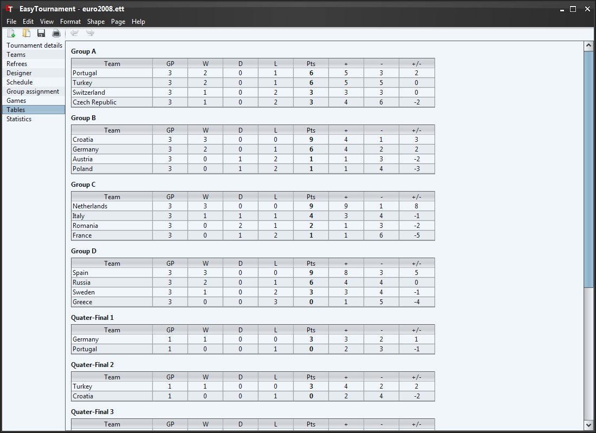
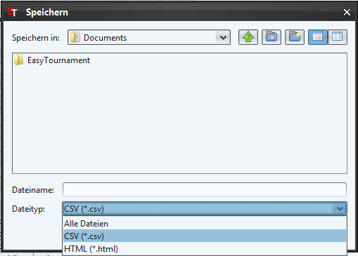

As the name states you can see the tables, which are sorted according to the in Rules defined rules.
It is possible to sort the tables by clicking on the column headers. This doesn't change the ranking of the teams in the tournament.
It is possible to save the tables as CSV (e.g. for spreadsheet applications as MS Excel) or as HTML file. To do this you have to select the menu "File"->"Export..." and in the opening dialog the entry "Tables".
In the save dialog (see next image) are you able to select the desired filetype.
